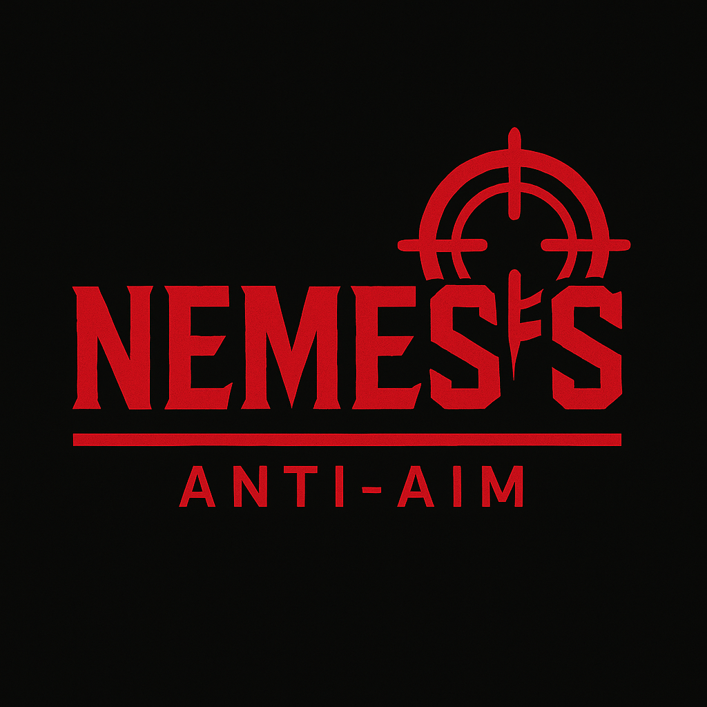

Nemesis Anti-Aim
Desync Like Never Before - Legit, Safe, Undetected
Download Nemesis Installer
Features
Adaptive desync and jitter configuration
Full CS2 compatibility
Undetectable and silent
Auto-injection on game launch
Simplified UI for private users
How It Works
Launch Nemesis before starting CS2
Wait for the console to confirm injection
Join a match – anti-aim will be activated automatically
Use F6 to toggle between desync modes
Settings are saved between sessions
Testimonials
"Since I started using Nemesis, nobody can hit me. Feels like I'm untouchable without risking VAC."
– xXTriggerXx
"Better than Neverlose. The anti-aim feels smoother and doesn't show up in demos."
– legit_sam